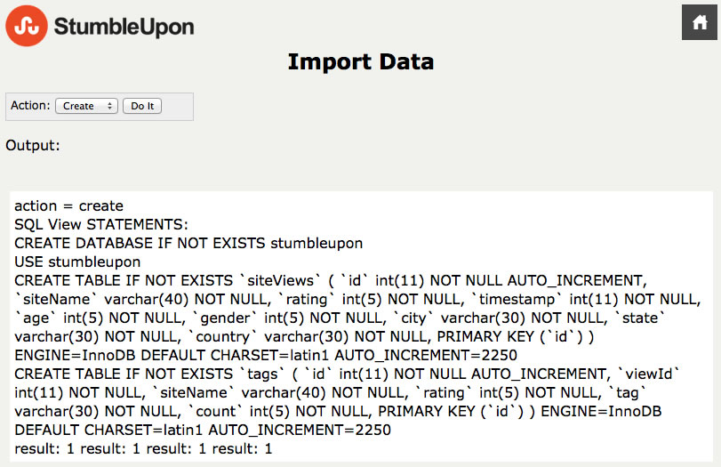
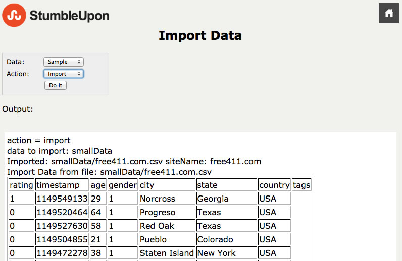
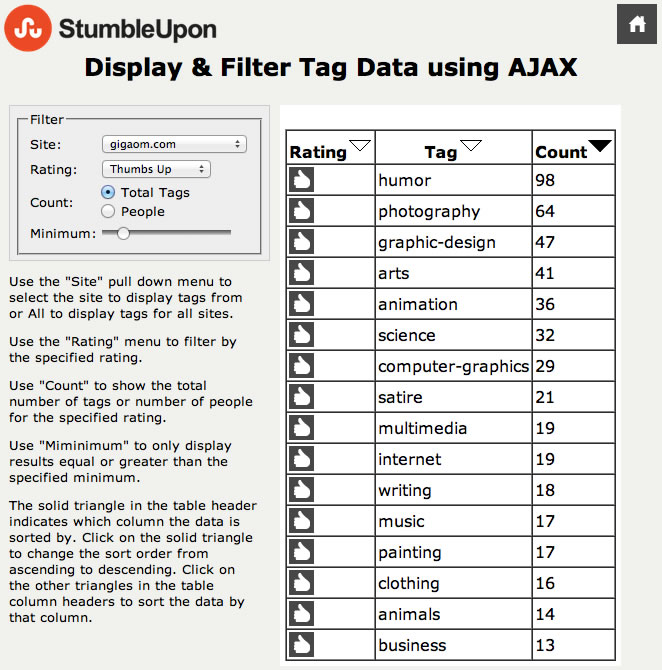

To get started click the "Import Data" link from the main page, 'index.html'. You will need to first create the database 'stumbleupon' and two tables, 'siteViews' and 'tags'. To do this select 'Create' from the pull down then click the "Do It" button. You should see some SQL statements and results like below.

Once you have created the tables you can import the data from the comma separated files. To do this you can select some sample data with the "Sample" option. This takes a lot less time to do the import and has a more manageable data set or select "All" from the "Data:" pull down menu to import the entire set of data from all the .csv files provided, this will take a very long time to complete. After it completes you should see output like below. Now you can click on the "Home" icon at the top right of the page and start looking at the data.

To see the imported data, from the main page click on "Display Tag Data as PHP" or as Ajax. The PHP page requires re-loading the page whenever you change on the form items to filter the data, click the "Reload" button to update the data being displayed. Note all the form values are reset to their default values.
Displaying Tag Data with AJAX
The Ajax page updates the data whenever you click on any of the form items, and the form items retain their values reflecting what is currently being displayed. When any of the filter fields are changed an xml http request is made to a php file 'sql/jsonData.php' which does the SQL query and returns the data in JSON format. Then using Javascript the JSON object is navigated and the data is returned as an html table. The triangles at the top of each column can be used to change the sort field, and order.
Displaying Tag Data with Ajax, Reverse Sort by Count, Minimum = 13
Use the "Site" pull down menu to select the site to display tags from or All to display tags for all sites.
Use the "Rating" menu to filter by the specified rating.
Use "Count" to show the total number of tags or number of people for the specified rating.
Use "Miminimum" to only display results equal or greater than the specified minimum.
The solid triangle in the table header indicates which column the data is sorted by. Click on the solid triangle to change the sort order from ascending to descending. Click on the other triangles in the table column headers to sort the data by that column.